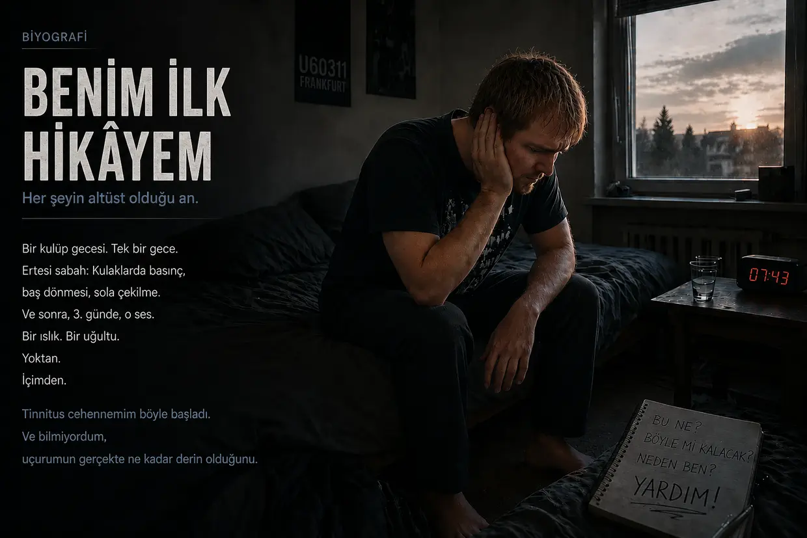
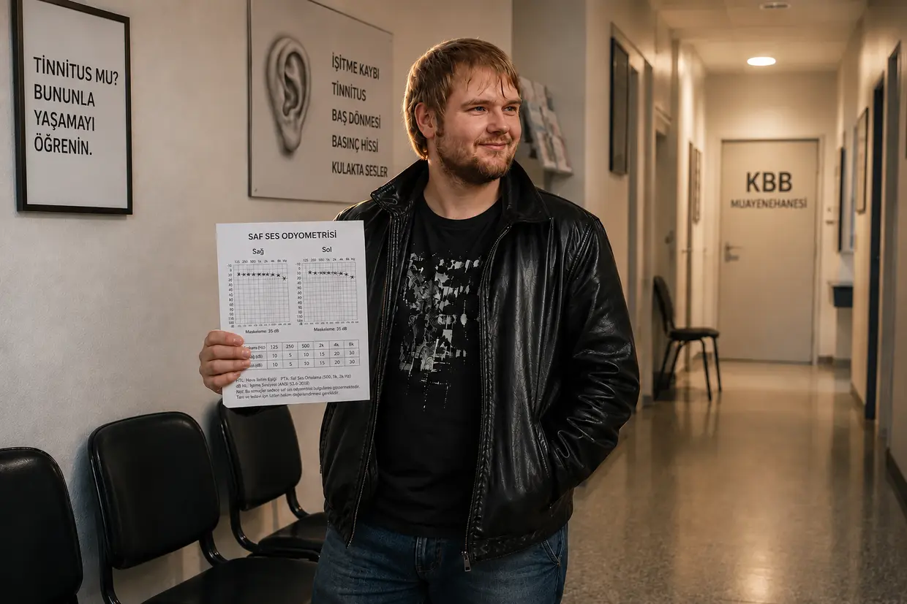
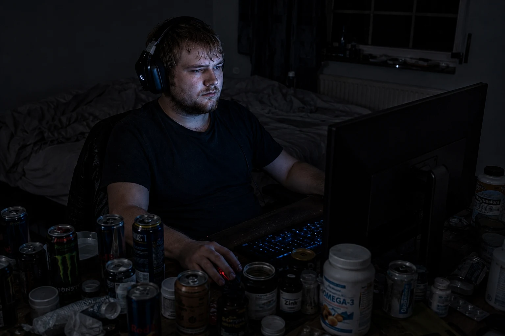

Tinnitus cehenneminden çıkış yolum (Kısa Versiyon)
Merhaba, benim adım Dustin Müller.
Şu an bu sayfaya geldiysen muhtemelen benim o zamanlar saplandığım aynı cehennemin içindesin. İyileşme hikâyemin 9.000 kelimelik ayrıntılı hâlini okumak isteyenler için biyografimin tamamı burada; 1. bölümle başlıyor.
Hızlı yanıtları ve hikâyenin ana hattını arayan diğer herkes içinse: Tinnitusumu o zamanlar tavizsiz bir mantık ve biohacking yöntemleriyle %100'den %0'a kadar dövüşe dövüşe nasıl indirdiğimin kısa ve öz özeti burada.
1. Çöküş (2011 sonbaharı)
23 yaşındaydım, sapasağlamdım ve bedenimin her şeyin altından kalkacağını sanıyordum. Frankfurt'taki bir tekno kulübünde (U60), bas hoparlörünün tam önünde durduğum tek bir ziyaret fişimi çekmeye yetti. Ertesi sabah ilk başta “sadece” aşırı baş dönmesi, kulaklarımda boğuk bir basınç ve güçlü biçimde sola çekilmeyle uyandım. Bedenim bunu nasıl olsa halleder, diye düşündüm. Ama 3. günde asıl canavar uyandı: Birden kulaklarımda o cehennemî ötme ve uğultu başladı. Sistemim artık tamamen çökmüştü.
2. Sistemin çuvallaması (“Bununla yaşamayı öğrenin”)
Panik içinde KBB doktorundan KBB doktoruna koştum. O zaman aldığım yanıtlar suratıma inen bir tokat gibiydi: İşitmem kalıcı olarak hasar görmüş, “bununla yaşamayı öğrenmem” gerekiyormuş. Hatta sesi müzikle ya da “beyaz gürültüyle” örtmem (maskeleme/TRT) tavsiye edildi; gerekirse antidepresan da önerildi.
Geriye dönüp baktığımda, bu “maskeleme” benim için ikinci, topyekûn çöküşe yol açan yıkıcı bir tavsiyeydi: Doktorlara körü körüne güvenerek okula giderken arabada, “dikkatimi dağıtmak” için yüksek sesle müzik dinledim. Zaten bomboş olan hücrelerim için bardağı taşıran son damla buydu. Okulda birden vahşi bir ses hassasiyeti (hiperakuzi) başladı, görüntü sanki takla atıyormuş gibi döndü (şiddetli vertigo) ve — benim o zamanki açıklamama göre — iç kulağımdaki iyon yığılması denge organına taşıp onu adeta tamamen su altında bıraktı (Menière hastalığı belirtileri). Dünyadan bütünüyle kopmuştum ve artık evden çıkamıyordum.
3. Dönüm noktası: “Fantom ses” iddiasına karşı kanıt
Daha sonra bir tinnitus uzmanı, birkaç ay geçtikten sonra tinnitusumun artık yalnızca beyindeki bir “fantom ses” olduğuna beni inandırmaya çalıştı. Karşı kanıt ise tesadüfen karşıma çıktı: Üniversite hastanesinde akut bir dış kulak yolu iltihabı tedavi edilirken doktor, gürültülü bir aspiratörle kulaklarımı temizledi. Tinnitusum tam o saniyede bu gürültü uyaranına fiziksel olarak tepki verdi ve patlarcasına yükseldi!
Benim için acımasız ama dosdoğru mantık şuydu: O zamanki düşünceme göre psikolojik bir fantom ses, mekanik gürültüye gerçek zamanlı tepki vermezdi. Tinnitusum sabit bir şey değildi. Arızalı kaynak hâlâ kulağımdaydı — ve hücrelerim her yeni gürültünün altında yardım diye bağırıyordu.
4. Sessizlik protokolü

Hastanede (sonuç vermeyen bir kortizon tedavisi için) yatarken kalın gazlı bezler yüzünden kulaklarım günlerce dış dünyadan tamamen yalıtılmıştı. Sesin gerçekten azaldığını ilk kez orada fark ettim. Gereken sonucu çıkardım, “dikkatimi dağıtmam” yönündeki bütün doktor tavsiyelerini yok saydım ve aylarımı neredeyse mutlak sessizlikte geçirdim. Müzik yok, kulaklık yok, gündelik gürültü yok. Böylece tinnitusum yaklaşık %25 azaldı (elbette benim hissim — sonuçta tinnitusu cetvelle ölçmüyorsun). Ama sonra iyileşme tamamen durdu. Bedenim takılıp kalmıştı.
5. B12 kıvılcımı (Acımasız çıkarım)
Asıl büyük atılım yine aile içinde yaşanan bir olayla geldi. Babam bir sinir hastalığı nedeniyle kendisine yüksek doz B12 vitamini enjekte ediyordu ve gözle görülür biçimde canlanmıştı.
İşte o anda analitik jeton düştü: 15 yaşımdan beri vejetaryendim VE uzun süre ağır kronik gastrit (mide mukozası iltihabı) çekmiştim. (Bu arada o gastriti kısa süre önce mineral kil karışımı, probiyotikler ve psilyum kabuklarıyla yenmiştim — doktorların yanılabileceğinin ilk kanıtıydı bu!) Etsiz beslenmeyle hasta bir midenin birleşimi, ağır bir B12 eksikliği için kusursuz zemindi.
Bu mantığın peşinden giderek babamdan bana da kas içi bir enjeksiyon yapmasını istedim. Önemli: Bunu doktor gözetimi olmadan yapmanı kesinlikle önermiyorum. Ertesi sabah tinnitusum çok ciddi biçimde azalmıştı (yaklaşık %40 iyileşme)! O zaman vardığım sonuç şuydu: B12, ATP üretiminin ana yakıtıdır. Hücrelerim gürültü yüzünden son ATP'sini de yakıp bitirmişti. Enjeksiyon hücrelerimi enerjiyle doldurdu, “hücresel motor” yeniden çalıştı ve bedenim gece boyunca onarım yapabildi.
6. Eksik yapı taşı (Hücre zarları ve miyelin)
B12'ye rağmen tinnitusum gün içinde tekrar tekrar kötüleşiyor, yeniden yükseliyordu. Nedeni neydi? Pilim şarj oluyordu ama hücrelerin fiziksel yapısı hâlâ bozuktu.
Yeni ve çok ağrılı bir kriz sırasında (safra koliği) tesadüfen lesitin granülüyle karşılaştım; bu, koliği hafifletmeme yardımcı oldu. Önemli: Safra taşın varsa mutlaka tıbbi destek al — burada anlattığım, akut bir durumdaki tamamen kişisel deneyimimdir; tedavi tavsiyesi değildir. Lesitini ilk kez aldıktan yalnızca üç gün sonra, başlangıca göre %60–65 oranında iyileşmiştim!
Bunun arkasındaki biyoloji beni büyülemişti. O zaman bunu şöyle yorumladım: Lesitin (fosfolipitler) yalnızca sinirleri saran kılıf (miyelin tabakası) için önemli değildi; aynı zamanda her hücre zarının temel yapı taşıydı. Diskodaki ağır gürültünün yarattığı oksidatif stres yüzünden aşırı yüklenmiş işitme hücrelerimin duvarları düpedüz kırılgan ve geçirgen hâle gelmişti. B12 enerjiyi (ATP), lesitin ise hasarlı tüy hücrelerini fiziksel olarak yeniden mühürlemek ve işitme sinirindeki gevşek bağlantıyı onarmak için gereken hücre çimentosunu sağlıyordu.
7. “Carpet Bombing” — topyekûn besin bombardımanı (%100'lük zafer)
Darboğazı kesin olarak parçalamak için acımasız bir ortomoleküler “Carpet Bombing” başlattım. Bu yalnızca benim o dönemde uyguladığım kişisel protokoldü; özellikle yüksek dozlar herkes için uygun değildir, bunları doktorunla değerlendir. Bedenime hücre onarımı için ihtiyaç duyduğunu düşündüğüm her şeyi verdim:
- O zamanlar hâlâ hırpalanmış olan midemi baypas etmek için yüksek doz B vitaminleri (B1, B2, B3, B5, B6, B9, B12)
- 30 gram lesitin
- Amino asitler ve 3 gram en kaliteli Omega-3 yağı
- C vitamini, mineraller (çinko, magnezyum) ve mikrobesin konsantreleri (LaVita, Dr. Rath)
Fade-Out (Sesin sönüşü):

Bu devasa besin desteği ve sessizliğe sıkı sıkıya bağlı kalmamla gidişat artık kesin biçimde değişmişti. Ses sabahları gittikçe azalıyor, akşamları yaşadığım gerilemeler giderek daha kısa sürüyordu. Ta ki bir sabah uyanıp kontrol etmek için kulak tıkaçlarını kulaklarımın derinine bastırana ve mutlak, özgürleştirici bir ölüm sessizliğiyle karşılaşana kadar. Kısma düğmesi sıfırdaydı.
O zamanki açıklama modelime göre miyelin tabakam onarılmış, işitme hücrelerimin aktin iskeleti yeniden ayağa kalkmış ve beynim acil durum yükselticisini kapatmıştı. Biyoloji kazanmıştı.
İpleri eline al
Aynı karanlığın içindeysen sana umudun olduğunu göstermek istiyorum. Kendim için keşfettiğim biyolojik bağlantıları ve hangi biohacking adımlarının kendi bedenimi kurban modundan çıkardığını bu sitede tam olarak belgeledim. Bu bilgilerle ne yapacağın ve kendi bedeninin biyolojisini — ideal olarak doktoruna danışarak — nasıl destekleyeceğin tamamen senin elinde. Benim yolum, benim hikâyem. Artık seninkini yazma zamanı.
Önemli not:
Burada okudukların, kişisel deneyimlerimi anlattığım bir yazıdır. Her beden ve her hikâye farklıdır.

CFS çöküşü ve niasin flush'ı
Yıkıcı zincirleme reaksiyon: CFS çöküşü
İlk tinnitusum iyileştikten sonra her şeyin yoluna girdiğini düşünen yanılır. Ama hayatımı tehdit ediyor gibi hissettiren bu çöküş, tinnitus iyileşmesinin “bedeli” değildi; sistemimin dengesini tamamen altüst eden yıkıcı bir zincirleme reaksiyondu.
Bedenim sinsice işleyen biyolojik bir paradoksa sıkışmış, dosdoğru uçuruma gidiyordu: Aşırı bir “overdrive” — sürekli son gaz — yaşam tarzıyla kendimi durmadan kamçılıyordum. Bedenim tam da bu fazla enerjiyi tinnitusu başarıyla iyileştirmek için kullandı — ama bedeli korkunçtu. Farkında olmadan hücresel pilimde kalan son enerjiyi de yakıp bitirdim.
İşlenmemiş ve arka planda kalmış bir travma, kortizonun ardından kalan kimyasal etkiler, aralıksız süren bu hücresel aşırı uyarılma ve agresif antibiyotiklerle asit baskılayıcıların tamamen mahvettiği bağırsak dengem birleşince ayaklarımın altındaki zemin kesin olarak çekilip gitti.
Üstüne bir de Epstein-Barr virüsü (EBV; enfeksiyöz mononükleoz) eklenince sistemim tamamen çöktü. Teşhis: Kronik yorgunluk sendromu (CFS). Bir yıldan uzun süre neredeyse yatağa bağımlıydım. Benim o zamanki açıklama modelime göre mitokondriler (hücrenin enerji santralleri), enerji üretimini (ATP) neredeyse tamamen durdurmuştu.
6.800 avroluk çıkmaz sokak ve en büyük kibrim

Çaresizlik içinde, önüme ne geldiyse ayırt etmeden satın aldım. Life Extension ve Thorne gibi ABD'li dev markaların pahalı takviyelerinden C vitamini infüzyonlarına, KPU tedavilerinden hormon replasman tedavilerine kadar her şeyi denedim. Panik yüzünden yarıda kesmek zorunda kaldığım simüle edilmiş yüksek irtifa antrenmanına (IHHT) da giriştim ve CFS konusunda uzman bir kliniğe yatırılmanın eşiğine geldim.
O tek yıl içinde bu çılgınlığa, abartmıyorum, yaklaşık 6.800 avro gömdüm. Sonuç? Mutlak sıfır. Bedenim bunların hiçbirine yanıt vermedi.
Trajikomik ironi şuydu: Gece araştırmalarım sırasında Alman FitLine şirketinin sitesine rastladım. Orada tam 4 ya da 5 saniye kaldım, sitenin görünümüne baktım ve kibirle şöyle düşündüm: “Şu moda spor içeceklerinden biri için ne kadar aptalca bir isim bu? Benim güçlü ilaçlara ihtiyacım var, renkli meyve sularına değil.” %100 para iade garantisiniyse tamamen gözden kaçırdım. Egom ve yarım yamalak bilgim bana CFS cehenneminde daha nice aylar kaybettirdi.
2014 yazı: Niasin flush'ı ve hücresel yeniden başlatma
2014 yazındaki mutlak dip noktamda, kendi ifademle %98 oranında yatağa bağımlıydım. Derken YouTube, olayları inanılmaz derecede bütüncül ve yetkin biçimde açıklayan bu Heilpraktiker'in videosunu karşıma çıkardı. Benden yalnızca 30 kilometre uzakta olduğunu görünce son gücümle kendimi oraya sürükledim; çünkü annem beni artık başka bir doktora götürmeyi kesinlikle reddediyordu.
Benim için suya bir toz karıştırdı — parlak turuncu bir sıvı. Yarım yıl önce kibirle silip attığım FitLine setinin ta kendisiydi!
6 ila 8 dakika sonra olan şey tam anlamıyla çılgınlıktı: Devasa bir niasin flush'ı başladı. Bütün bedenim aşırı derecede ısındı, damarlarımdan devasa bir kan dolaşımı dalgası hızla geçti ve cildim kızardı. Bir yıldan uzun bir süreden sonra ilk kez hücrelerimde gerçek, fiziksel enerji hissettim.
Benim o zamanki açıklamam şuydu: Bedenim üçlü bir blokajın içindeydi. Birincisi, sürekli stres ve antibiyotikler yüzünden mide-bağırsak sistemimin dengesi tamamen bozulmuştu (disbiyoz). İkincisi, katı kapsülleri sindirebilmek için bağırsağımda düpedüz hücresel enerji (ATP) yoktu. Üçüncüsü ise anaerobik metabolizmanın acil durum mekanizması yüzünden hücrelerim öylesine asitlenmişti ki içeri neredeyse hiçbir besin maddesi giremiyordu. Önümde dolu tabaklar varken hücresel düzeyde açlıktan ölüyordum.
Benim yorumuma göre sıvı ve biyoyararlanımı yüksek besin seti, bu devasa emilim blokajını bir anda kırdı.
Gururumu bir kenara bıraktım ve o andan itibaren ürünleri her gün disiplinle kullandım. Sonuçlar neredeyse gerçeküstüydü:
- 20 gün sonra: Yeniden gayet normal biçimde merdiven çıkabiliyordum.
- 2 ay sonra: Yatağa bağımlılık ortadan kalkmıştı; yeniden güçlü bir tempoyla bisiklete binebiliyordum.
- 3 ila 4 ay sonra: Fiziksel olarak çökmeden bir bilgisayar kursunu tamamladım.
- 2 yıldan biraz daha kısa bir süre sonra: Fiziksel olarak hayatımda hiç olmadığım kadar formdaydım ve REWE Online'da insanın iliğini kurutan son derece ağır bir işte çalışıyordum — hem de gönüllü çift vardiyalarla!
Hayatımın en çılgın deneyi (2016 sonu)

Hücresel enerji hakkında dövüşe dövüşe kazandığım bu bilgi, tinnitus matrisini tamamlayan eksik anahtardı. Besin rutinim sayesinde hücresel ATP tankım artık benim tabirimle sürekli %200 kapasitede doluydu ve şu mantık zihnimi bırakmıyordu: İlk tinnitusumda neredeyse hiç enerjim yoktu ve kendimi yarım yıl sessiz bir odaya kapatmak zorunda kalmıştım. Bedenim şimdi, bu aşırı enerjiyle yeniden gürültü darbesi alırsa ne olur? Günlük hayat akıp giderken kendini onarır mı?
⚠️ Önemli uyarı: Bu deneyi anlatmadan önce, bunun bende kalıcı hasara da yol açabileceğini açıkça belirtmek istiyorum. Sakın deneme.
Her doktorun mutlak delilik diyeceği bir karar aldım: Teorimi kendi bedenimde kanıtlamak için ikinci bir tinnitusu bile isteye tetikledim.
2016'nın sonundaki yılbaşı gecesinde beni koruyan bütün tedbirleri bir kenara attım ve çılgınca eğlendim. Bir yandan deneyi göze almak istiyordum; öte yandan CFS iyileşmemin üzerinden henüz iki yıl bile geçmediği için içimde hâlâ devasa bir yaşam açlığı vardı. O gece yalnızca geçici bir uyarı sinyali vardı: kulağımda bir basınç hissi. Ama tam da bu, işi son sınırına kadar götürme dürtümü tetikledi. Haftalar boyunca kulaklarımı yüksek sesli kulaklık müziğiyle acımasızca bombardımana tuttum — dinlemek artık düpedüz fiziksel bir acıya dönüştüğünde bile. Hücresel içgüdüm çığlık atıyordu ama aklım acıyı görmezden geliyordu.
Ta ki o tek akşama kadar: Bilgisayarın başındaydım. Kulaklıkları taktığım anda dış sesler kesildi — o ani sessizlikte sol kulağımdaki ince bip sesini duydum. Ses geri dönmüştü. Bir yanda katıksız dehşet, diğer yanda deliliğe varan bir büyülenme.
Testim için “canavarı” gerçekten büyütmek ve benim tabirimle %200'lük ATP kalkanımın onu hemen yeniden boğmasına izin vermemek üzere soğukkanlı ve son derece riskli bir karar aldım: Besin takviyelerine tamamen ara verdim; FitLine setimi ve lesitinimi bilerek bıraktım.
Çöküş, panik ve canlı kanıtlar
Bu kesintisiz provokasyon ve koruyucu kalkanın yokluğu altında sistemimin tamamen çökmesi bir buçuk ila iki ay sürdü. Tinnitus acımasızca geri dönmüş, şiddeti ilk tinnitusumdaki düzeyin %75'ine ulaşmıştı; yanında da yepyeni bir ses kaosu vardı: tipik, delici bir sinüs tonu, tuhaf bir Mors kodu sinyali, derin bir tıslama ve bir siren.
Akşam yatağa uzandığımda gerçek yüzüme sertçe çarptı. Sesler öylesine kulakları sağır ediciydi ki gece çökerken içimde katıksız bir panik yükseldi: Bu aptal deneyle hayatımı belki de sonsuza dek mahvettim mi?
Ama yönü tersine çevirmeden önce sistemimi kelimenin tam anlamıyla mutlak dayanma sınırında test ettim:
- Çene-boyun testi: Başımı ve çenemi geniş hareketlerle oynatarak sesin hem karakterini hem de şiddetini kesin olarak etkileyebiliyordum!
- Gürültü testi (maskelemeye karşı kanıt): Kendimi 2–3 dakika boyunca aşırı yüksek beyaz gürültüye maruz bıraktım. Burada anlattığım aşırı ses düzeyi, doktorların olağan maskeleme önerisiyle aynı şey değildi; tehlikeli bir aşırılıktı, sakın deneme. Kulaklıkları çıkardığımda birkaç saniye mutlak ölüm sessizliği hüküm sürüyor, ardından tinnitus hiç olmadığı kadar yüksek ve saldırgan biçimde uluyordu. Kendi bedenimde gördüğüm ve o zaman somut, tartışılmaz saydığım kanıtı şöyle yorumladım: Gürültü, hasarlı olduğunu düşündüğüm tüy hücrelerini durmaksızın iyon pompalamaya zorluyordu. Kulaklığı çıkarınca hücresel sistemin pili tamamen boşalıyor ve birkaç saniyeliğine tepki veremeyip “sessiz” kalıyordu — bana göre bir refrakter dönem. Azıcık enerji toplar toplamaz acil durum sinyali iki kat daha yüksek bir şiddetle geri çakılıyordu!
- Alkış testi (mekanik şok): Ellerimi kulağımın hemen önünde sertçe çırpmam, tinnitusu tam o saniyede öfkeyle ulumaya zorluyordu.
Günlük hayatın içinde iyileşme (“Keşiş modu” olmadan)
Ertesi sabah yeter artık dedim. Deney zirveye ulaşmıştı. İyileşme stack'imle geri dönüşe başladım:
- FitLine setinin tamamı (Activize, Restorate, Basics ve Q10 içeren Omega-3).
- Kişisel bakım mağazasından aldığım lesitin granülü.
Bu kez çok belirleyici bir şeyi bilerek dışarıda bıraktım: O acı amino asit tozlarını artık kullanmadım! Bunun arkasındaki dâhiyane sistem biyolojisi şuydu: İlk tinnitusum sırasında ağır kronik gastrit çekiyordum ve normal yiyeceklerdeki proteinleri parçalayamıyordum. Şimdi, yıllar sonra, bağırsak onarımı sayesinde sindirimim kusursuz biçimde çalışıyordu. Sağlıklı mide-bağırsak sistemim, miyelin tabakası için gereken amino asitleri normal besinlerimden kendi başına sorunsuzca çıkarabiliyordu.
En büyük fark şuydu: İlk seferki gibi kendimi hayattan yalıtmaya zerre niyetim yoktu. CFS zaferinden sonra yaşam açlığım artık düpedüz devasa boyuttaydı. Akıllı bir uzlaşma seçtim: Aşırı yüksek seslerden kararlılıkla kaçındım (sonuna kadar açılmış araba radyosu yok, kulaklık yok, disko yok) ama kendimi tamamen geri çekmedim. Alışverişe, lunaparka ve sinemaya gitmeye devam ettim; görece normal yaşamayı sürdürdüm.
“Ha?!” anı ve mutlak sessizlik
Akıl almaz şey gerçekleşti: Daha ilk haftalarda (2. ve 3. hafta arasında) birden fark ettim: Oha, ses şimdiden tepki veriyor!
Seslerde hissedilir bir azalma ve incelme vardı. Önce sol kulağımdaki bu yepyeni tıslama iz bırakmadan kayboldu, ardından sürekli ötme de hissedilir biçimde inceldi. Tam anlamıyla afallamış hâlde oturup şöyle düşündüm: “Ha?! Tamam, vay be… Burada aslında hâlâ tamamen normal yaşıyorum, yalnızca ani ve aşırı gürültülerden kaçınıyorum ve buna rağmen bu şey şimdiden tepki mi veriyor?!”
İyileşme sürecim üç buçuk ayı aşmıştı ama dört buçuk ay dolmadan tamamlanmıştı. Frekanslar sistematik biçimde birer birer söndü:
Önce sağ kulaktaki tinnitus devreden çıktı ve yaklaşık iki ay sonra tamamen iyileşti. Sol kulakta siren ve kamyon motorunu andıran derin uğultu solup gitti; geriye yalnızca yüksek frekanslı sinüs tonu — mutlak son boss — kaldı.
İlk tinnitusumda olduğu gibi sabah saatleri belirleyici göstergeydi. Sanki bir ayar düğmesi gittikçe sıfır noktasına doğru dönüyordu. Üçüncü ayın sonuna doğru ses akşamları öylesine azalmıştı ki onu ancak tamamen sessiz bir odada kulak tıkacı taktığımda ya da bütünüyle sessiz banyoda oturduğumda algılayabiliyordum.
İşi kesin olarak bitirmek için bir kez daha özel B12 vitamini damlaları aldım ve sistemime ağız mukozası üzerinden o son itişi vermek için bunları her gün doğrudan dilimin altına damlattım.
Ve sonra, takip eden haftaların birinde, tamamen yok olmuştu. Kayboldu. İz bırakmadan. %100.
Hayatımın en büyük ve en tehlikeli stres testini geçmiştim. Artık mutlak ve sarsılmaz bir kesinlikle biliyordum: Benim yaşadığım gürültüye bağlı tinnitusun iyileşmesi tesadüf, şans ya da mistik bir kader değildi. Benim bedenimde bu, hücrelerime kendilerini onarmak için tam olarak ihtiyaç duydukları şeyi verdiğimde ortaya çıkan mantıksal ve kaçınılmaz sonuçtu — üstelik normal hayatın tam ortasında.
Son bir kısa ve dürüst söz (Real Talk)
Bu hastalık ve iyileşme hikâyesinin tamamının dışarıdan bakana nasıl göründüğünü çok iyi biliyorum. Bunların hepsini kendi bedenimde yaşamamış olsaydım — absürt “tesadüfler” silsilesini, KBB doktoruna karşı ilk isyanımı, CFS'nin dibine düşüşümü, sonuç vermeyen 6.800 avroluk tedavileri ve sonunda YouTube algoritmasının beni kurtaran Heilpraktiker'i yalnızca 30 kilometre öteden karşıma çıkardığı o çılgın “Matrix anını”… Muhtemelen ben de bunu ucuz bir Hollywood senaryosu ya da uydurulmuş bir masal diye bir kenara atardım. Gerçek olamayacak kadar çılgınca geliyor.
Ama tam da bu yüzden bütün kartlarımı burada açık açık masaya koyuyorum. Bu, uydurulmuş bir iyileşme hikâyesi değil; pazarlama numarası hiç değil, dayanaksız ezoterizm ise zerre değil. Bu, fiziksel ve hücresel düzeyde acımasız gerçeğin ta kendisi. Bu cehenneme ve bu iyileşmeye dair her bir fiziksel kanıt elimde: Ağır frekans kayıplarını gösteren, doktorlar tarafından hazırlanmış odyogramlarım, laboratuvar raporlarım, tanı belgelerim, klinik ve terapist faturalarım.
Bütün bunları seni eğlendirmek için anlatmıyorum. Anlatıyorum, çünkü o lanet sistemin şifresini çözdüm — ve bu bilgi işitmeni ve gecelerini kurtarabilir.
📖 Hikâyenin tamamını bütün ayrıntılarıyla mı istiyorsun?
Bu, iki perdelik kısa versiyondu. Hikâyenin tamamını — her odyometriyi, her çaresiz KBB ziyaretini, her atılımı, her kimyasal tepkimeyi en ince ayrıntısına kadar — kapsamlı uzun versiyonda yazdım. Yaklaşık 9.000 kelime; dürüst ve filtresiz. Kendine bir çay hazırla. ☕
👉 Uzun versiyon burada: 1. Bölüm: Cehenneme Yolculuk · 2. Bölüm: Zorlu Sınav